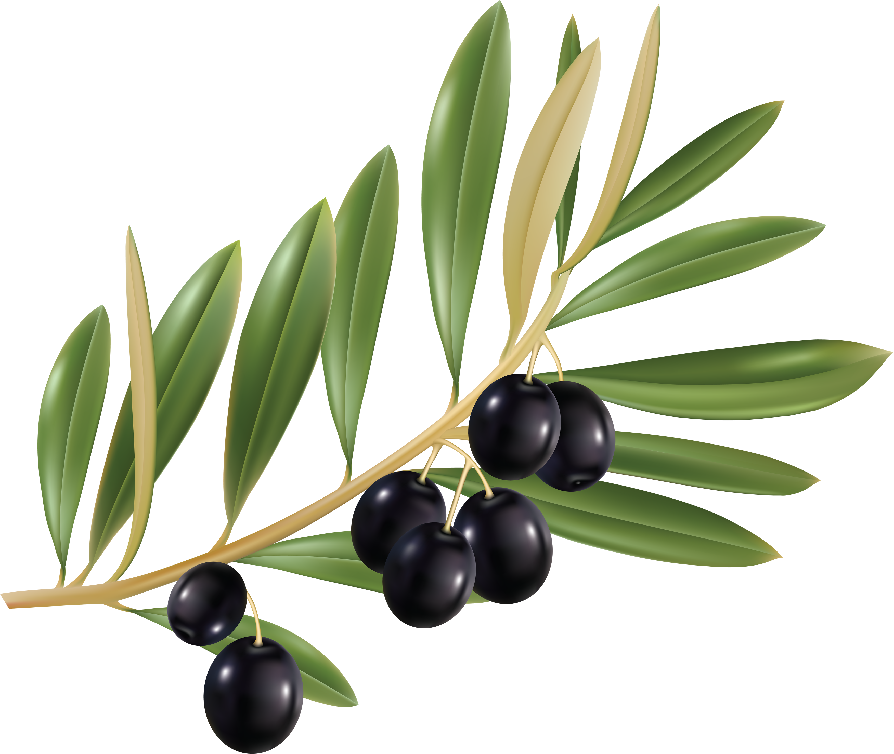
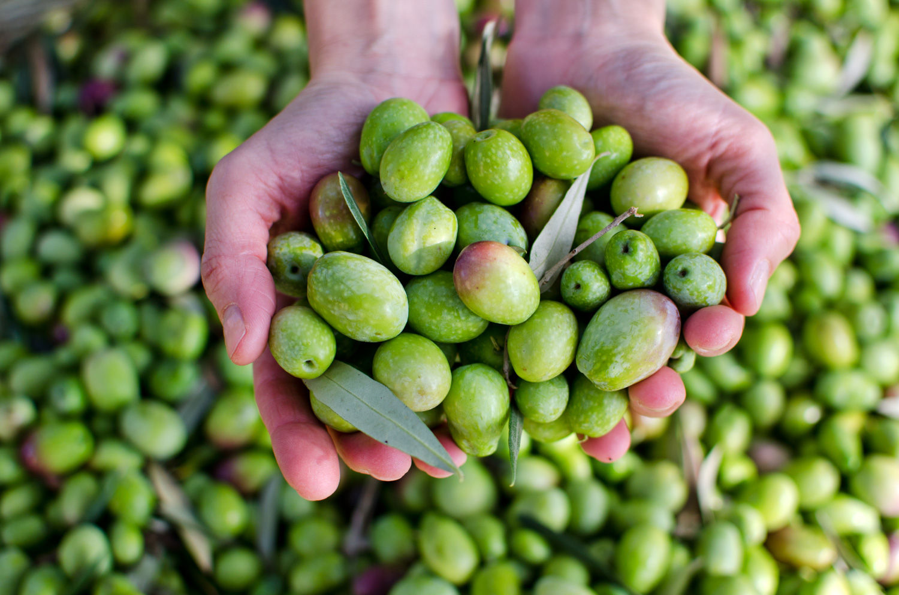
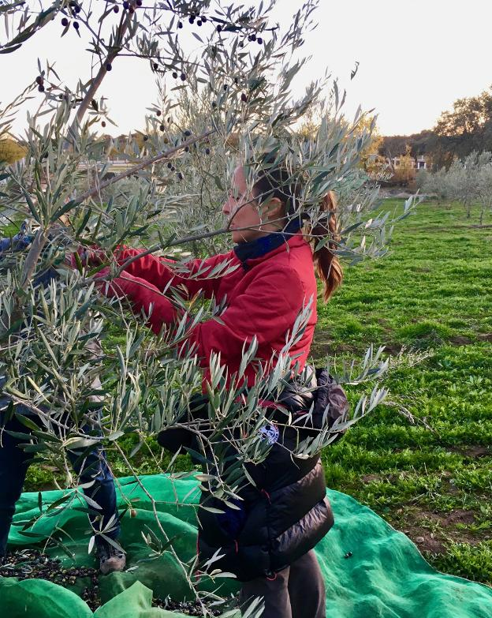
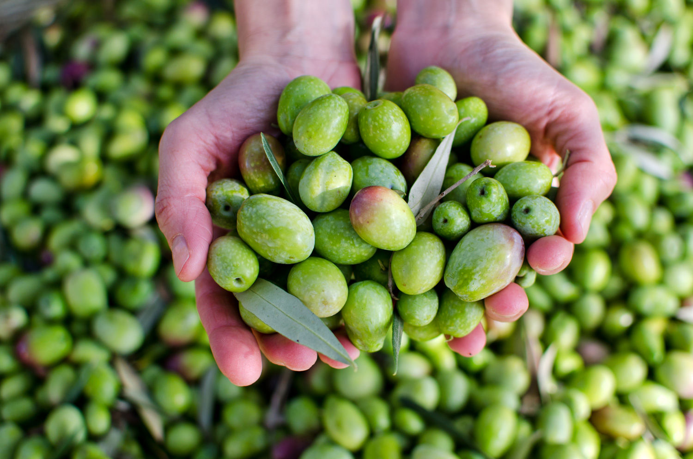
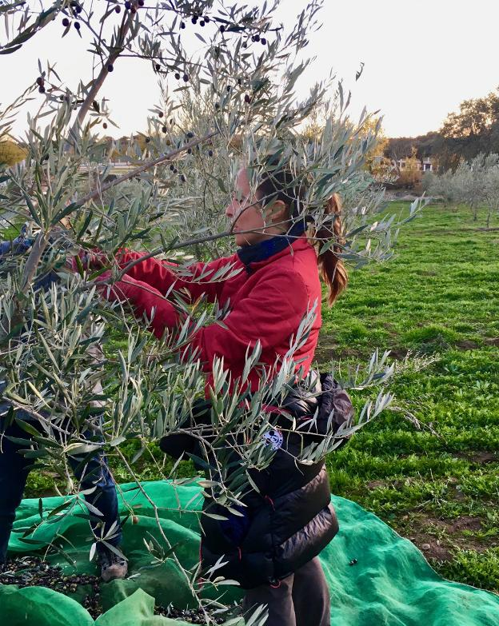

Aceite de cosecha propia
El aceite de oliva es muy beneficioso por su valor nutricional, por ello es la mejor eleccion para cocinar cualquier plato. Los aceites de oliva vírgenes y vírgenes extra, son los denominados “zumo de aceituna”, poseen un sabor más intenso que varía según las variedades de aceitunas de las que proceda. Es en su uso en crudo cuando los aceites vírgenes y vírgenes extra, toman mayor relevancia y se convierten en protagonistas. Cuando aliñamos una ensalada, realizamos una salsa o untamos pan, el aceite realza el sabor del alimento dándole un toque especial que se disfruta en el paladar.
El aceite de oliva es rico en ácidos grasos monoinsaturados, rico en vitamina E un antioxidante natural , y contiene polifenoles. El ácido oleico ayuda a mantener niveles normales de colesterol en sangre cuando sustituye a las grasas saturadas de la dieta. Por todo ello, el aceite de oliva es la mejor elección para cocinar cualquier tipo de platos.
En crudo
Cuando los aceites vírgenes y vírgenes extra, toman mayor relevancia se convierte en protagonistas. Cuando aliñamos una ensalada, realizamos una salsa o tomamos pan, el aceite realza el sabor del alimento dándole un toque especial que se disfruta en el paladar.
Condimento
Como condimento tiene un papel muy importante en técnicas como el macerado o el marinado. Esencial en adobados y escabechados que permiten no solo una mayor conservación sino conseguir platos más sabrosos.
Conservante
Tiene una función conservadora muy activa, da un sabor especial a los alimentos que en él se conservan. Por ejemplo, las conservas de pescado en aceite de oliva dotan al pescado de una excelente calidad. También puede ser soporte de especias que utilizamos para enriquecer la cocina.
Fotografias
 


